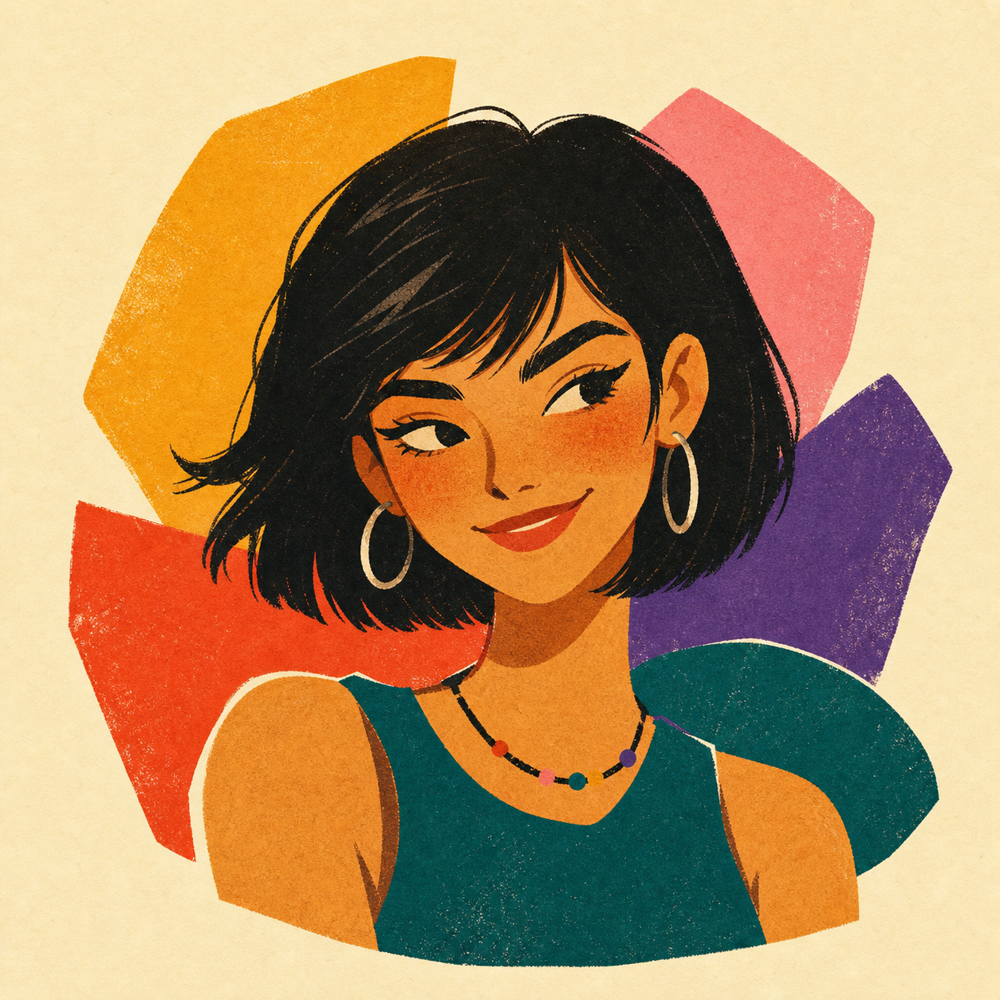

Research positioning
My work has a deep methodological root in radio interferometric imaging and a growing interdisciplinary branch in AI x radio astronomy. The aim is to make large radio surveys more precise, scalable, and scientifically useful.
Radio astronomy · AI · research culture · neurodiversity
I am Dr Haoyang Ye, an astronomer working on radio imaging, AI-assisted source classification, research infrastructure, and neurodiversity-informed mentoring.

Radio imaging methods, AI x radio astronomy, source classification, and infrastructure.
02Open career conversations for astronomy, astrophysics, and cosmology researchers.
03A local-first workbook library for mapping energy, sensory needs, learning, and values.
04Research topics, mentoring expectations, and practical resources for students.
Research
My work has a deep methodological root in radio interferometric imaging and a growing interdisciplinary branch in AI x radio astronomy. The aim is to make large radio surveys more precise, scalable, and scientifically useful.
Work on gridding, W-stacking, and sub-arcsecond LOFAR wide-field processing, with methods connected to production radio astronomy software.
Machine-learning approaches for separating star-forming galaxies and AGN across radio survey regimes, including radio-quiet AGN recovery.
Experience across SRCNet, SKA management and infrastructure, and collaborations involving high-performance data systems.
Community
Supported by the University of Cambridge's Enhancing Research Culture Funding. Focused on researchers in astronomy, astrophysics, and cosmology. Open to all.
A monthly series for honest career stories after astronomy and astrophysics degrees: academia, industry, policy, AI, software, venture, public engagement, and beyond.
Theme: Diverse Career
Time: Wednesday, 15 October, 16:00-18:00
Venue: Sanders Hall, Postdoc Centre, Cambridge
Neurodiversity
A local-first workbook library for neurodivergent users. Notes stay in the browser on the user's device; the framing is understanding, not correction.

Energy Map, Sensory Map, Learning Style Map, Discovering My Values, What I Love About Myself, and Checking-In With My Body.
Warm paper textures, bold collage shapes, clear silhouettes, and non-pathologizing language. The interface helps people notice patterns without forcing a fixed label.
Students
I value clear expectations, written structure, regular check-ins, and access-aware ways of working. Good research support should reduce hidden cognitive load, not add to it.
Send a short note with what you want to work on, your current background, what kind of support you need, and any constraints on time, funding, or accessibility.